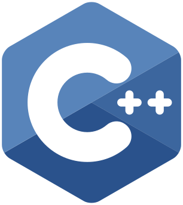
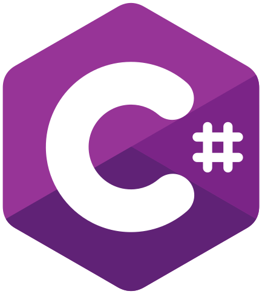
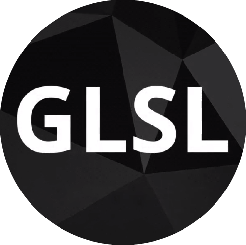
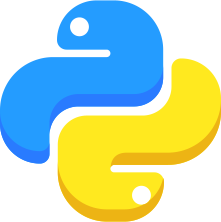
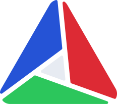
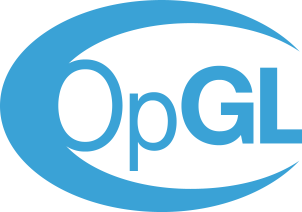
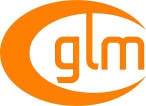
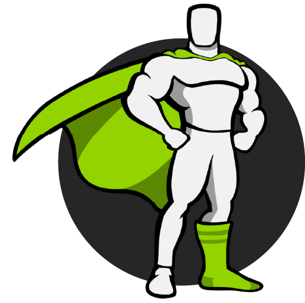
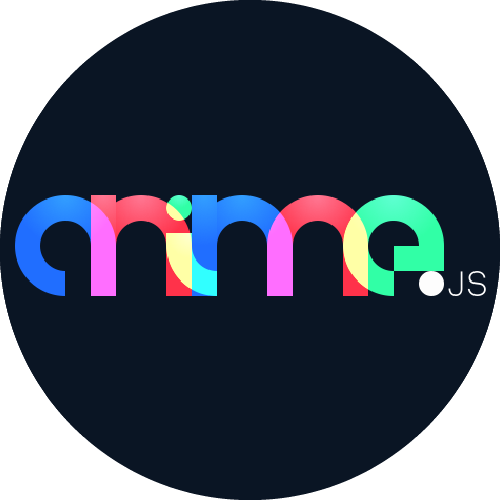

Hi! I'm a 21 years old french student in the engineering school Polytech Paris-Saclay, I'm in my second year of the engineering cycle majoring in computer science after the two years of integrated preparation. I'm looking for a 3 month internship in a foreign country for the summer 2022. Are you interested? Contact me!
Languages Libraries Softwares Contact













*